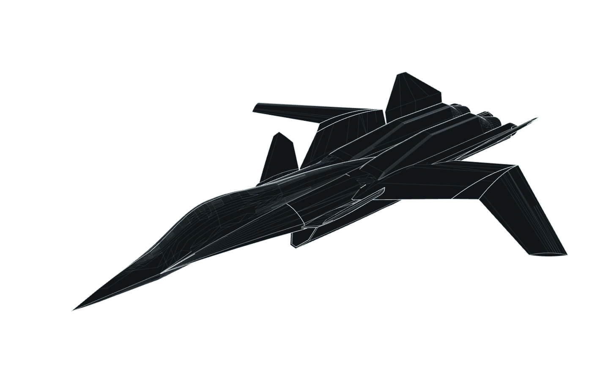

Aerodynamics Structures Control systems Systems integration

X-02S / CAD GEOMETRY FORM & SURFACE STUDY
Higher systems. Deeper questions. A more capable tomorrow.
Loading page
Page 01 could not load.
About / Luis Albos
Aerospace & Mechatronics Engineering.
Multidisciplinary aerospace professional with experience spanning hands-on aircraft engineering, mechatronics, robotics, technical leadership, and digital tools.